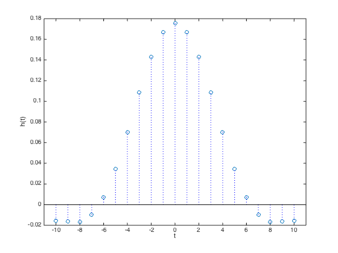
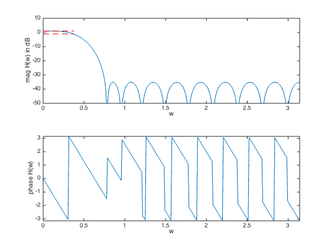

% "Filter design" lecture notes (EE364) by S. Boyd % (figures are generated) % % Designs a linear phase FIR lowpass filter such that it: % - minimizes maximum stopband attenuation % - has a constraint on the maximum passband ripple % % This is a convex problem (when sampled it can be represented as an LP). % % minimize max |H(w)| for w in the stopband % s.t. 1/delta <= |H(w)| <= delta for w in the passband % % where H is the frequency response function and variable is % h (the filter impulse response). delta is allowed passband ripple. % % Written for CVX by Almir Mutapcic 02/02/06 %******************************************************************** % user's filter specifications %******************************************************************** % filter order is 2n+1 (symmetric around the half-point) n = 10; wpass = 0.12*pi; % passband cutoff freq (in radians) wstop = 0.24*pi; % stopband start freq (in radians) ripple = 1; % (delta) max allowed passband ripple in dB % ideal passband gain is 0 dB %******************************************************************** % create optimization parameters %******************************************************************** N = 30*n; % freq samples (rule-of-thumb) w = linspace(0,pi,N); A = [ones(N,1) 2*cos(kron(w',[1:n]))]; % matrix of cosines % passband 0 <= w <= w_pass ind = find((0 <= w) & (w <= wpass)); % passband Ap = A(ind,:); % transition band is not constrained (w_pass <= w <= w_stop) % stopband (w_stop <= w) ind = find((wstop <= w) & (w <= pi)); % stopband As = A(ind,:); %******************************************************************** % optimization %******************************************************************** % formulate and solve the linear-phase lowpass filter design cvx_begin variable h(n+1,1); minimize(norm(As*h,Inf)) subject to 10^(-ripple/20) <= Ap*h <= 10^(ripple/20); cvx_end % check if problem was successfully solved disp(['Problem is ' cvx_status]) if ~strfind(cvx_status,'Solved') return else fprintf(1,'The minimum attenuation in the stopband is %3.2f dB.\n\n',... 20*log10(cvx_optval)); % construct the full impulse response h = [flipud(h(2:end)); h]; end %******************************************************************** % plots %******************************************************************** figure(1) % FIR impulse response plot(-n:n,h','o',[-n:n;-n:n],[zeros(1,2*n+1);h'],'b:',[-n-1,n+1],[0,0],'k-'); xlabel('t'), ylabel('h(t)') set(gca,'XLim',[-n-1,n+1]) figure(2) % frequency response H = exp(-j*kron(w',[0:2*n]))*h; % magnitude subplot(2,1,1) plot(w,20*log10(abs(H)),... [0 wpass],[ripple ripple],'r--',... [0 wpass],[-ripple -ripple],'r--'); axis([0,pi,-50,10]) xlabel('w'), ylabel('mag H(w) in dB') % phase subplot(2,1,2) plot(w,angle(H)) axis([0,pi,-pi,pi]) xlabel('w'), ylabel('phase H(w)')
Calling SDPT3 4.0: 756 variables, 240 equality constraints
For improved efficiency, SDPT3 is solving the dual problem.
------------------------------------------------------------
num. of constraints = 240
dim. of socp var = 456, num. of socp blk = 228
dim. of linear var = 300
*******************************************************************
SDPT3: Infeasible path-following algorithms
*******************************************************************
version predcorr gam expon scale_data
NT 1 0.000 1 0
it pstep dstep pinfeas dinfeas gap prim-obj dual-obj cputime
-------------------------------------------------------------------
0|0.000|0.000|3.0e+02|4.8e+01|1.9e+05| 2.877848e+02 0.000000e+00| 0:0:00| chol 1 1
1|0.987|1.000|3.9e+00|3.0e-01|2.5e+03| 2.800460e+02 -4.028429e+01| 0:0:00| chol 1 1
2|0.999|1.000|2.3e-03|3.0e-02|1.0e+02| 6.165609e+01 -3.228073e+01| 0:0:00| chol 1 1
3|0.988|0.971|1.1e-04|4.2e-03|2.3e+00| 1.230066e+00 -1.017814e+00| 0:0:00| chol 1 1
4|0.898|0.953|1.1e-05|5.1e-04|4.8e-01| 1.536249e-01 -3.268418e-01| 0:0:00| chol 1 1
5|0.961|0.852|4.3e-07|1.0e-04|8.5e-02| 1.559695e-02 -6.980559e-02| 0:0:00| chol 1 1
6|0.972|0.606|1.2e-08|4.2e-05|4.4e-02|-1.776171e-03 -4.543010e-02| 0:0:00| chol 1 1
7|0.733|0.682|3.2e-09|1.4e-05|2.7e-02|-5.697790e-03 -3.258358e-02| 0:0:00| chol 1 1
8|0.895|0.989|3.5e-10|1.8e-07|8.8e-03|-1.164473e-02 -2.047779e-02| 0:0:00| chol 1 1
9|0.691|1.000|1.1e-10|3.1e-09|3.9e-03|-1.450191e-02 -1.841515e-02| 0:0:00| chol 1 1
10|0.996|0.938|4.0e-13|4.9e-10|7.3e-04|-1.686999e-02 -1.759775e-02| 0:0:00| chol 1 1
11|0.883|0.817|5.1e-14|1.2e-10|1.7e-04|-1.733179e-02 -1.749801e-02| 0:0:00| chol 1 1
12|0.831|0.901|9.0e-15|1.5e-11|3.9e-05|-1.744009e-02 -1.747935e-02| 0:0:00| chol 1 1
13|0.948|0.879|1.6e-14|2.8e-12|3.6e-06|-1.747300e-02 -1.747660e-02| 0:0:00| chol 1 1
14|0.981|0.981|2.0e-14|1.1e-12|1.5e-07|-1.747606e-02 -1.747621e-02| 0:0:00| chol 1 1
15|0.992|0.991|6.4e-13|1.0e-12|2.5e-09|-1.747619e-02 -1.747620e-02| 0:0:00|
stop: max(relative gap, infeasibilities) < 1.49e-08
-------------------------------------------------------------------
number of iterations = 15
primal objective value = -1.74761943e-02
dual objective value = -1.74761968e-02
gap := trace(XZ) = 2.52e-09
relative gap = 2.43e-09
actual relative gap = 2.43e-09
rel. primal infeas (scaled problem) = 6.43e-13
rel. dual " " " = 1.01e-12
rel. primal infeas (unscaled problem) = 0.00e+00
rel. dual " " " = 0.00e+00
norm(X), norm(y), norm(Z) = 7.4e-01, 3.2e-01, 1.3e+00
norm(A), norm(b), norm(C) = 8.6e+01, 2.0e+00, 9.6e+00
Total CPU time (secs) = 0.25
CPU time per iteration = 0.02
termination code = 0
DIMACS: 6.4e-13 0.0e+00 4.6e-12 0.0e+00 2.4e-09 2.4e-09
-------------------------------------------------------------------
------------------------------------------------------------
Status: Solved
Optimal value (cvx_optval): +0.0174762
Problem is Solved
The minimum attenuation in the stopband is -35.15 dB.
 